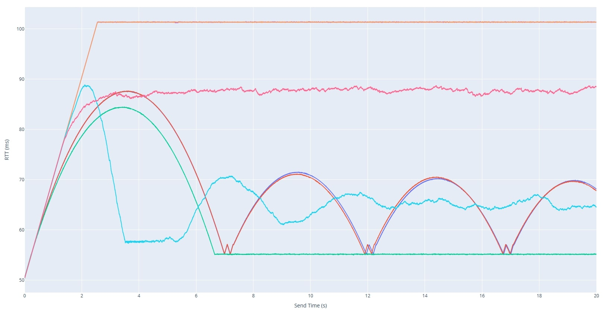
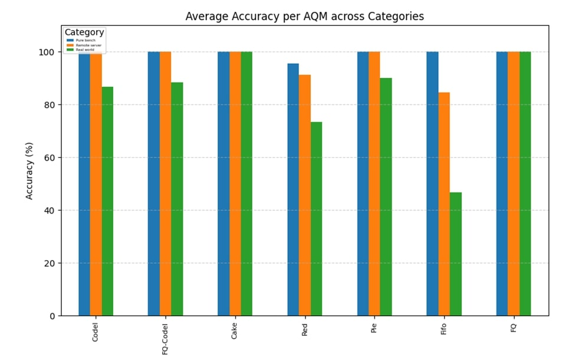

Research on Active Queue Management (AQM) Classification and Analysis
During my research internship at Institut Polytechnique de Paris and later at Telecom Sud-Paris, I developed a full testbed and classification framework capable of identifying which Active Queue Management (AQM) algorithm is running in a bottleneck router. The system was designed to distinguish between algorithms such as CoDel, FQ-CoDel, Cake, PIE, RED, FIFO, and FQ. The ultimate goal was to analyze how these queue disciplines affect congestion, latency, and fairness, and to build a detection system that operates without privileged access to the router.
Objective
The main objective was to identify the AQM algorithm active in a network bottleneck using only RTT traces collected from UDP traffic. This required creating an experimental framework that generated, captured, analyzed, and compared large quantities of network data automatically. The classification needed to remain accurate across varying link speeds, queue lengths, and packet sizes.
Architecture Overview
The system was structured around three main machines forming a controlled testbed:
- Client: Responsible for generating UDP traffic and recording RTT measurements in real time.
- Router: Configured with different AQM algorithms via Linux’s
tc qdiscsystem (CoDel, FQ-CoDel, PIE, RED, Cake, FIFO, and FQ). This device acted as the network bottleneck, enforcing queuing delay and packet drops. - Server: Received packets and sent acknowledgments back to the client, closing the feedback loop.
Each component interacted through a Python-based orchestration layer that coordinated configuration, data collection, and experiment timing. The design allowed repeatable testing under controlled parameters such as bitrate, queue size, and packet interval.
Workflow
- Connection Establishment
- The master client connects to the master server over TCP.
- Bottleneck Measurement (1)
- The server runs the bitrate measurement server binary.
- The client runs the corresponding measurement client binary and extracts the bottleneck bitrate.
- Bottleneck Type Verification (2)
- The server runs the bottleneck type checker binary.
- The client runs the corresponding type checker client binary at the measured bitrate + 2 Mbit/s.
- If throughput increases significantly, the bottleneck may be CPU or another factor; otherwise, it is confirmed to be the interface speed.
- Queue Size Measurement (3)
- The server runs the queue measurement server binary.
- The client runs the corresponding queue measurement client binary and extracts the queue length in packets.
- Queue Consistency Check
- The client estimates queuing delay based on bitrate, packet size, and measured queue length.
- If the estimated sojourn time is very small, the client raises a warning (possible misconfiguration, RED behavior, or background traffic) but continues the experiment.
- Simulation-Based Test Time Estimation (4)
- The client runs a CoDel simulation using the measured bitrate, added bitrate, queue size, and packet size.
- The simulation suggests an experiment duration; if invalid, a default of 30 seconds is used.
- Final test time is set to simulation time + 1 second.
- AQM/FQ Measurement (5)
- The server starts the AQM/FQ measurement binary.
- The client launches the classification measurement tool, tuned with adjusted bitrate, packet size, and estimated test time.
- RTT traces are collected.
- File Transfer
- The client sends all generated CSV files to the server.
- Classification (6)
- The server runs the Python classifier with the correct template family.
- The classification result is sent back to the client and logged.
- Completion
- Both sides close the connection.
Figure 1 – Overall architecture of the AQM classification and analysis framework.
Detailed Architecture Components
1. Traffic Generation and RTT Measurement
I implemented multiple C programs that used both raw UDP sockets and standard UDP sockets to simulate various traffic flows with high timing accuracy.
Instead of relying on usleep() or fixed sleep intervals, the sender dynamically tracked the elapsed time since the start of transmission and computed how many packets should have been sent by that point in time.
If the actual number of sent packets lagged behind the theoretical rate, the sender immediately sent the necessary packets to catch up.
This timing control approach ensured consistent and precise bitrate regulation without cumulative drift caused by system-level sleep inaccuracies. Each sender operated based on a defined target bitrate, allowing accurate reproduction of network load at different transmission speeds.
- Bitrate-based pacing by calculating expected packet count from elapsed time since start.
- Configurable payload size and total packet count per experiment.
- Support for concurrent sender threads to simulate multiple independent flows.
Round-Trip Times (RTTs) were measured at the client side by timestamping outgoing packets and matching them with acknowledgment timestamps received from the server. The resulting RTT traces were stored as time-series datasets, capturing queue buildup, delay oscillations, and congestion patterns under each tested AQM discipline.
2. Router Configuration and AQM Control
The router (a Linux system acting as a virtual bottleneck) was configured using tc qdisc commands. A shell-based configuration script applied the desired AQM discipline on the egress interface:
tc qdisc add dev eth0 root codel limit 1000 target 5ms interval 100mstc qdisc add dev eth0 root pie limit 1000 target 20ms tupdate 15mstc qdisc add dev eth0 root fq_codel, etc.
Additional scripts removed qdiscs cleanly after each experiment.
3. Bottleneck Analysis and Pre-Processing
- Bottleneck Bitrate Estimation: A C program transmitted UDP packets and the server approximated the link’s maximum sustainable rate by looking at the maximum received rate.
- Queue Length Estimation: Another C program measured queue buildup time to calculate queue depth (queue length).
- CPU Bottleneck Detection: Another C program ensured that the observed delay was due to link capacity, not processor limitations.
4. CoDel Simulation
I implemented a Python simulation of the CoDel algorithm faithfully based on the Linux kernel’s CoDel implementation. This simulation was used to study how network parameters such as bottleneck bitrate,packet size, queue length, and added bitrate influence delay control behavior. It also provided a reference RTT pattern used to calculate the needed total test time and that can be used for classification comparisons in the future.
5. Data Collection and Storage
Each experiment produced multiple CSV trace files:
- Per-packet RTT measurements (timestamp, RTT value, sequence number).
- Metadata files containing AQM type, bitrate, queue length, and parameters.
All data was organized hierarchically by AQM type and bitrate for structured post-processing.
6. Classification and Analysis Engine
The classifier was implemented in Python using Dynamic Time Warping (DTW) to measure similarity between new RTT traces and pre-recorded template traces of each AQM type. Two classification stages were applied:
- Stage 1: Distinguish between fair-queuing AQMs (like FQ-CoDel, FQ, Cake) and non-fair-queuing ones (like CoDel, PIE, RED, FIFO).
- Stage 2: Perform fine-grained classification within each group using normalized DTW distance metrics and flow correlation behavior.
Automation Framework
A central Python orchestration script handled:
- SSH-based remote control of client, router, and server machines.
- Automated setup and teardown of AQM configurations.
- Timed execution of traffic experiments and collection of logs.
- Computation of DTW similarity matrices and accuracy statistics.
Results
Ideal Testbench
Ideal Testbench with remote server
Home network tests

The developed framework achieved high classification accuracy under a wide range of network conditions, including variations in bitrate, queue length, and packet size. In controlled testbed environments, the system consistently distinguished between all tested AQM algorithms with strong separation in their RTT profiles. When evaluated in a real-world scenario involving a live client and router over an operational network, the classifier maintained an overall accuracy of 87%, demonstrating its robustness outside laboratory conditions.
Each AQM exhibited a distinct temporal signature in the RTT traces:
- CoDel and PIE displayed highly recognizable periodic delay oscillations corresponding to their active queue control cycles, making them the most easily distinguishable algorithms.
- RED showed probabilistic yet smoother delay variations resulting from its random early drop mechanism, producing moderate oscillations without strict periodicity.
- FQ-CoDel, Cake, and FQ each displayed their own characteristic RTT signatures in single-flow conditions. All three demonstrated clear evidence of per-flow fairness and reduced inter-flow interference, with RTTs remaining stable and well-isolated between flows.
- FIFO traces were dominated by congestion plateaus and sharp delay spikes, reflecting unregulated queue buildup and absence of any active queue control.
These results confirm that end-to-end RTT measurements carry sufficient information to infer the active queue management policy at a bottleneck router. The classification performance validates the effectiveness of combining precise C-level traffic generation, kernel-level AQM configuration, and DTW-based pattern matching for automated queue behavior identification.
Conclusion

This project represents a state-of-the-art framework for the identification and analysis of Active Queue Management (AQM) algorithms using only end-to-end network measurements. By integrating C-based traffic generation, precise RTT collection, kernel-level AQM configuration, and Dynamic Time Warping (DTW)-based classification, it achieves an unprecedented level of accuracy and automation in recognizing queue management behavior without requiring any access to routers.
The system goes beyond traditional traffic analysis approaches by correlating time-domain RTT dynamics with underlying queue control logic, allowing fine-grained differentiation between AQMs such as CoDel, PIE, RED, Cake, FQ-CoDel, FQ, and FIFO. Its modular and fully automated design makes it adaptable to both controlled research environments and real-world network scenarios.
The resulting framework demonstrates that passive AQM classification is both feasible and practical—a significant advancement in network diagnostics and congestion research. It establishes a foundation for future intelligent systems capable of autonomously identifying, simulating, and optimizing queue management strategies in next-generation networks.
Beyond classification, the system increases visibility into bottleneck behavior, enabling network operators to identify the active AQM and adapt congestion control algorithms accordingly for tangible performance gains. This capability also has dual security implications: while identifying the AQM can be leveraged by attackers as a reconnaissance step to craft targeted strategies, it equally empowers defenders. Knowing the active AQM allows adaptive congestion control mechanisms to respond effectively under attack or in hostile conditions, preserving network stability and throughput.
Future extensions include integrating reinforcement learning to predict queue type adaptively and simulation all AQMs to generate on the fly perfect templates given network parameters.